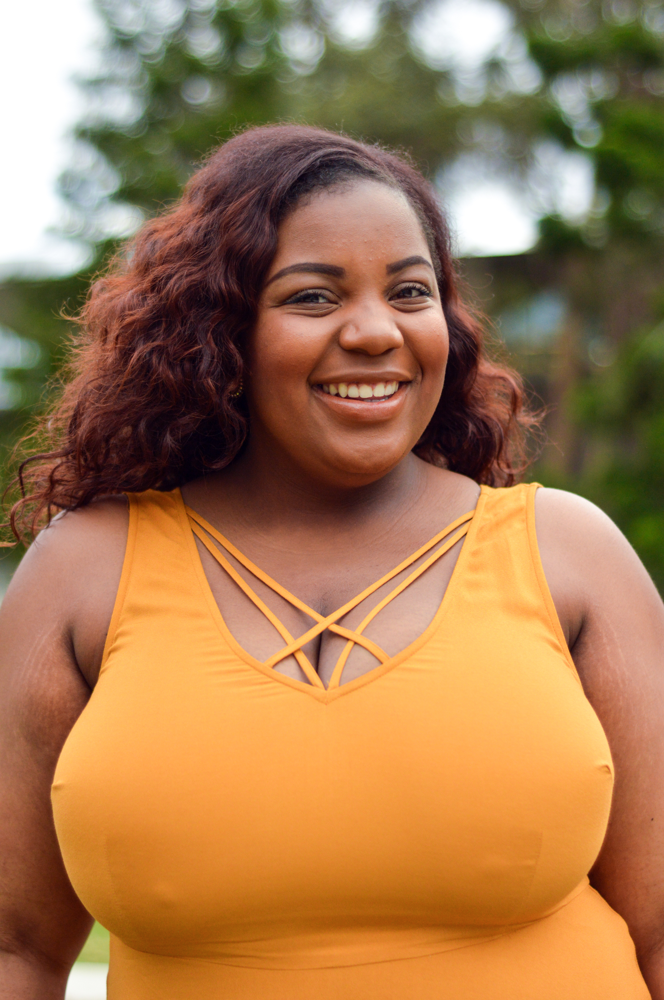
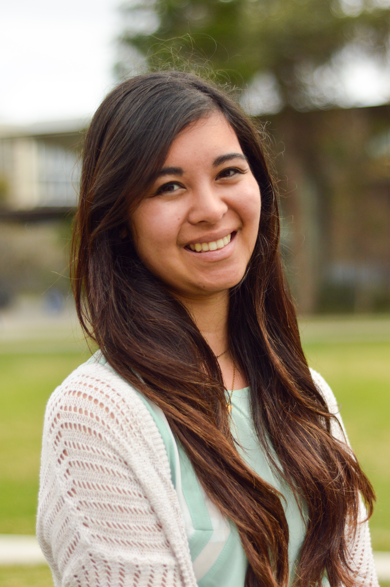
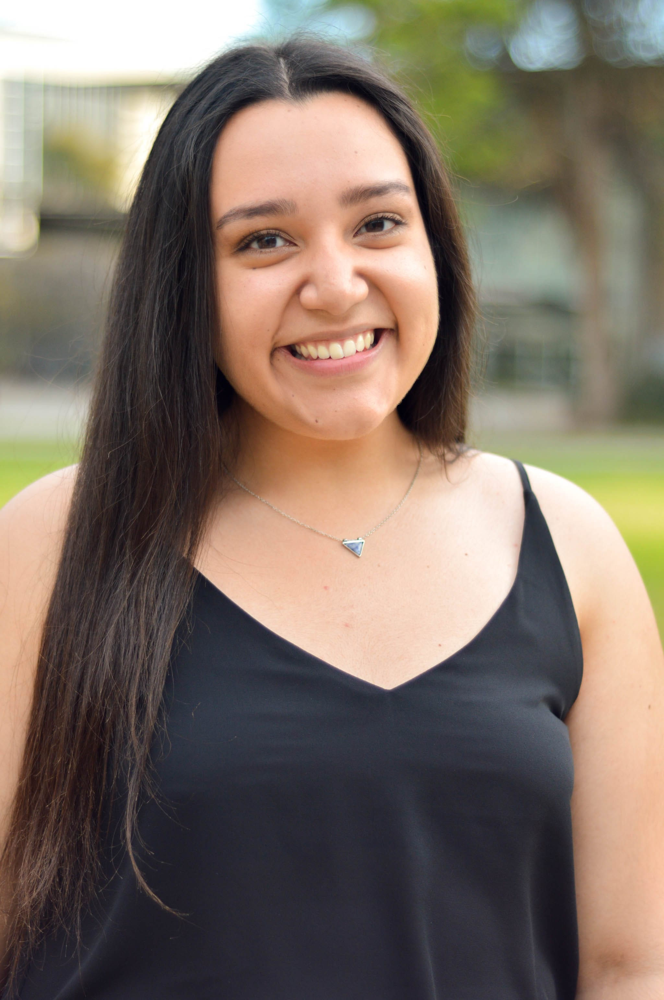
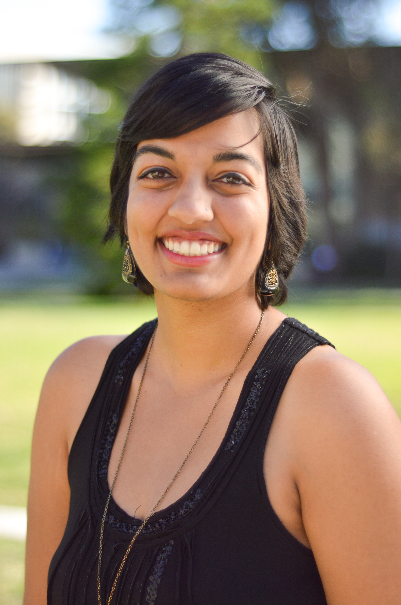

THE VAGINA MONOLOGUES

({DIRECTORS})
({CAST N CREW})






Name: Alicia Powers
Graduation Year: 2015
Major(s) and Minor(s): UCSD Alumn
Position: Director
When describing the personality of Alicia, the easiest point of reference is the character "Joy" from the popular film, Inside Out. Alicia is a positive, vibrant, and bubbly, ball-of-energy who just wants to spread love and happiness to the world! Alicia feels most alive when she is salsa dancing (or any kind of dancing really), practicing yoga, or crafting. And yes, she is that girl who loves dogs and long walks on the beach.
Since graduating, Alicia has whole-heartedly chosen to stay in sunny San Diego because, to her, this vibrant city by the ocean feels like her true home. She now works full time (sometimes nights and weekends), but is so passionate about her work she doesn't care! For Alicia, working to develop student's potential never feels like a job. She always seeks to find a balance between time for herself and giving to others because to Alicia, self care is the MOST important! smile emoticon
Alicia is deeply honored to have been chosen to co-direct the show this year. She is enthusiastically motivated to do the "dirty work" behind the scenes, to create a space for these women to see their own strength that she, as a director, has seen all along. Alicia says she would never be able to truly find the right words to describe the importance of The Vagina Monologues in her own life or for the world.
However, a quote from her favorite feminist sums up her feelings about this show quite well: "By doing the work to love ourselves more, I believe we will love each other better." -Laverne Cox
She hopes you all enjoy watching the show just as she much as she has enjoyed directing it! Let's go girls!
Name: Arielsela H-Smith
Graduation Year: 2017
Major(s) and Minor(s): Global Health
Position: Director
Arielsela is a (relatively) carefree Black girl who has a special cabinet in her home solely filled with tea ready to sip. On paper, she will be receiving a degree in Global Health, but don't come at her though cus she may very well be graduating at the top of her class with a double major in Petty with a specialization in Commentary from the Sidelines because Bey told her best revenge is your paper. In general, her face speaks more than her mouth does. Catch her frequently lookin back at it during her tours tryin not to fall, spending time with the folk of the many multicultural organizations she's in, or getting lost in the sauce of the Global Health department. She trusts in the power of laughter, love, and lotion (the only L's she'll ever take), but also in marginalized communities, good food with good company, the arts, her melanin, and herself. Arielsela firmly believes in measuring life in meals and music. Example: Approximately, how many replays of Mama Badu's "Hello" will take you from UCSD to Ralph's?? These are truly the questions you need to be asking in order to properly flourish as you bless up!
Why did she return this year as a director this year, you ask? Well, being in cast for last year's production made her realize how necessary, powerful, and beautiful her voice is/can be, particularly on a campus where her story/background is underrepresented and often unrecognized. She noticed too that there was a need for a wider set of stories to be heard through the process of this production. And because she believes that that change and redirection could start with her, with these womxn, with THIS community of VagMo. Because we can do better.
Arielsela is mad hype to engage this community because she is very much here for the empowerment of a diverse set of young womxn, and helping to bring them to the point where they can revolutionize the traditionally Eurocentric, cisnormative, heteronormative, ableist (etc.) social dialogues without fear. She feels that if every individual can walk away from this experience recognizing the power of their voice as well as the power of LISTENING, that her job is done. She is honored to be on this journey with the cast and crew members and her very supportive co-directors, and to be able to see each of them smile a little bigger, walk a little prouder, and own their complete being.
Name: Armenuhi Avanesyan
Graduation Year: 2016
Major(s) and Minor(s): Microbiology and with a minor in Psychology
Position: Director
Armenuhi is almost done with her undergraduate years. You can find her walking, quickly (with an occasional fruit in one hand and coffee in the other) from one class to another. If she sees you she will beam at you and yell out your name in case you don't see her, and then she'll give you a hug (the coffee and fruit are still in her hands).
In her spare time, Armenuhi likes to read lots of books, at the same time! (but mostly she rereads Jane Austen, even the unfinished one). She also loves to write bad(ass) poetry and blog. She loves to play sports and will definitely break a toe for her team! Her not so secret talents include professional eyebrow doing and dancing.
She finds teaching absolutely amazing and has been a math tutor, a biology TA, and English teacher/ tutor throughout her undergraduate years. She speaks Armenian and Russian, and some Spanish. She is pursuing research in immunology along with obtaining a bioinformatics certificate.
She has a dog named Leo who looks like a hairy old grandfather and a wonderful sister and mom who look "just like her!" according to random strangers. She loves her family, lab group, friends, and the Vagina Monologues warriors very much and is inspired by them everyday!
Armenuhi was cast in the Vagina Monologues last year, in the monologue "Hair," and was inspired by past years' directors to do all that she could for future generations of vagina warriors. She will never stop fighting for women's rights/gender equality/feminism. She wants to start a nonprofit organization for victims of domestic violence in Armenia and believes that education is most important when it comes to empowering and improving the conditions of women globally and has dedicated the rest of her life to doing just that.